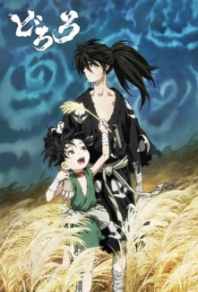
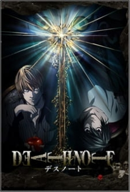
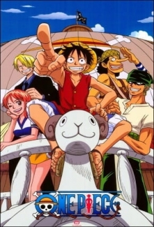
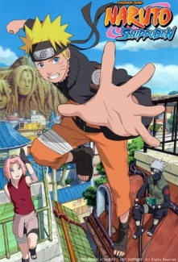
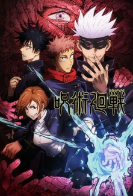
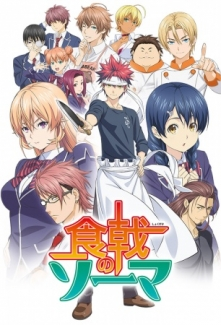

Dororo
Bir samuray efendisi, yeni doğmuş oğlunun organlarını savaş alanın üstünlük sağlamak için 12 şeytana feda etti. Yine de, terk edilmiş olan bu bebek, bir doktor sayesinde hayatta kalmayı başarır. Vücudunu tek parça olarak geri almak için çok sayıda şeytanı avlamaya karar veren genç kahraman,yolculuğu sırasında Japonya’nın en büyük hırsızı olduğu söylenilen bir yetimle karşılaşır.
Death Note
Yagami Light, üniversite giriş sınavlarına hazırlanan bir lise son sınıf öğrencisidir. Light (Raito), Japonya'nın belki de en yetenekli ve zeki öğrencisi olmasına rağmen, yaşadığı dünya ona tat vermemektedir. Her gün gittikçe artan suç oranı ve adalet sisteminin çökmüşlüğü, onun için bu dünyayı daha da anlamsız ve çürümüş kılmaktadır. Bu yüzden de, hiç bir şeyde anlam görmemektedir. Light, bu buhranlarını kendi içinde yaşarken, ders sırasında bir defterin gökten düştüğünü görür. Okul çıkışı elinde olmadan defterin düştüğü yere yönelir. Defterin üstünde "Death Note" yazmaktadır. Defteri yerden alıp incelediğinde hiç de inanacağı şeylerle karşılaşmaz. "Bu deftere ismi yazılan insan ölecektir." Nedenini kendi bile bilmeden, defteri alıp evine döner. Evde haberleri izlerken, bir adamın bir anaokulundaki öğrencileri ve öğretmenleri rehin aldığını izler. Defterin gerçekliğini test etmek için rehin alan adamın adını deftere yazar. Ve 40 saniye sonra adam ölür. Defterin gerçekliği karşısında şaşkına dönen Light, kendi ideal dünyasını yaratmak için diğer suçlulara yönelecektir. Ama ya dünya onun varlığını öğrenip peşine dünyanın en iyi dedektifi L'i takarsa?
One Piece
Korsan Kral Gold Roger, bu dünyadaki herşeyi elde eder ve idam edilirken, tüm servetinin Grand Line'da olduğunu, onu arayıp bulmaları gerektiğini söyler. Bu olaydan sonra herkes Grand Line'a gider. Ancak Grand Line'a girmek çok zor, Grand Line'da canlı kalabilmek imkansızdır. Kahramanımız Monkey D. Luffy'nin rüyası, Korsan Kral olmak ve One Piece denen kimsenin bilmediği, görmediği hazineyi ele geçirmektir. Küçük yaşlardan beri hep korsan olmak isteyen Luffy, kazara bir şeytan meyvası (Akuma No Mi) yemiştir. 3 farklı şeytan meyvası vardır ve bu meyvalar yiyenlere çok üstün güçler sağlamaktadır ancak bu güçlerin bedeli asla yüzememektir. Luffy'nin yediği meyva onu bir lastik çocuğa çevirir. Bu olaydan yıllar sonra Luffy denize açılır. Yolculuğu sırasında ekibini toplayacak ve One Piece'i bulmak için Grand Line'da birbirinden tehlikeli ve komik maceralara atılacaktır.
Naruto: Shippuuden
Naruto, Sasuke ile şelaledeki dövüşünün ardından Sasuke'yi geri getirmekte başarısız olmuştur. Orochimaru'nun Sasuke'nin vucudunu tamamen ele geçirmesi 3 yıl sürecektir. Bu süre içinde Naruto'nun, Sasuke'yi geri getirmesi gereklidir. Ancak bu kez Sakura da, Naruto'ya yardım etmeye karar verir. Bu yüzden, Naruto; Jiraiya'nın, Sakura; Tsunade'nin öğrencileri olur ve eğitimlerine başlarlar. Tüm bunlar olurken Akatsuki'nin başka planları vardır.
Jujutsu Kaisen
Bir çocuk… “doğru ölüm” için savaşır.rnrnZorluklar, pişmanlık, utanç… İnsanların hissettiği olumsuz duygular günlük hayatımızda gizlenen lanetlere dönüşür. Lanetler tüm dünyaya yayılır; insanları korkunç bir talihsizliğe, hatta ölüme götürebilir. Dahası, lanetler yalnızca başka bir lanetle defedilebilir.rnrnItadori Yuji sıradan bir lise hayatı yaşamakla birlikte çok büyük bir fiziksel güce sahiptir. Bir gün, lanetlerce saldırıya uğrayan bir arkadaşını kurtarmak için İki Yüzlü Hayalet’in parmağını yer ve laneti kendi ruhuna alır. Artık İki Yüzlü Hayalet ile aynı bedeni paylaşmaktadır. Büyücülerin en güçlüsü olan Gojo Satoru’nun yönlendirmesiyle, lanetlerle savaşan bir organizasyon olan Tokyo Büyükşehir Teknik Büyücülük Lisesi’ne kabul edilir. Böylece, bir laneti def etmek için lanete dönüşen çocuğun kahramanlık masalı; asla geri dönemeyeceği hayatı başlar.
Shokugeki no Souma
Yukihira Souma'nın hayali babasının restoranında tam zamanlı bir şef olmak ve babasının becerilerini aşmaktır. Ama Yukihira ortaokuldan mezun olduktan sonra babası Avrupa'da aşçılık yapmak için restoranı kapatmıştır. Hayal kırıklığına uğramış olmasına rağmen öğrencilerin sadece %10'unun mezun olabildiği elit bir aşçılık okulundan mezun olan Jouichiro'dan gelen bir meydan okumayla Souma'nın savaşma ruhu canlanmıştır. Bakalım Souma bunlara göğüs gerebilecek mi?